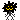

Our site is a small patch of land in a vast universe of creation. It’s a place that was originally crafted with no particular goal in mind by a boy that we no longer are. Now, it gets to be a place that is crafted with no particular goal in mind by the people that we are currently.
We believe in art and being unabashedly cringe. One of our non-particular goals when it comes to this site is to document our art in a centralized area. Archival and preservation are very important to us, and it pains us that we no longer have access to our older digital and physical art projects, so we work hard to create a collection that we can view easily in the far future.
We also value snapshots of life. We want to document our identities, as well. We want to know how we saw the world, who we were, what our opinions were, in the past. And that requires writing those things down in the present. Through our blogs, we will be able to look at all that was fun, sad, inspiring, stupid, brave, etc, happening in our lives during the time of their posting.
Here are more non-particular goals in a list:
This site aims to…
There is a non-zero chance that we may appear to be a strange pack of intense LARPers to the uninitiated. This site serves as a hub for being openly queer, plural, mentally ill, fiction, and alterhuman. You don’t need to understand those things to get something out of our site. In fact, you may get more out of our site if you don’t yet understand those things. Maybe you will never understand those things, and that’s fine as well. ~ See you later, explorer! ~
